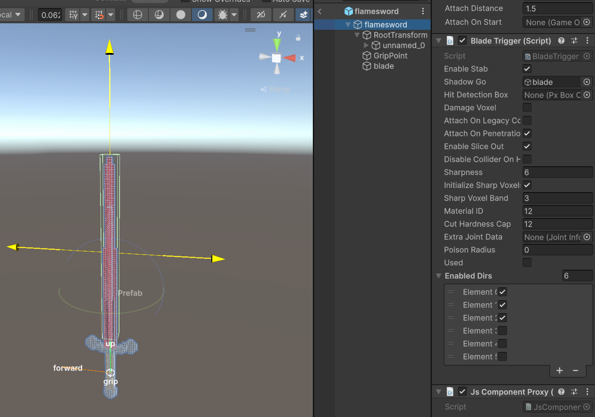

This tutorial introduces the current FlameSword sample in Assets/Samples/com.cydream.flamesword. Like the recent katana and asteroid wand samples, the gameplay extension is implemented in TypeScript and attached through JsComponentProxy.
Create or import a .vox sword model, then convert it into a prefab with the voxel import tools.
The sample lives in Assets/Samples/com.cydream.flamesword and includes:
flamesword.voxPrefab/flamesword.prefabScripts/flamesword.tsUse the same import flow as the katana or asteroid wand samples: import the voxel file, generate the prefab, then use that prefab as the base for your weapon setup.
The FlameSword sample is a cold weapon, so it uses BladeTrigger instead of firearm-style firing logic.
The prefab is structured like this:
RootTransform that holds the imported voxel mesh.GripPoint used for hand attachment.blade used as the blade trigger volume.The important part is the blade child object. It needs a BoxCollider configured as a trigger so the weapon can detect cuts along the blade volume.
If your toolkit version exposes a Hit Detection Box field on BladeTrigger, assign the blade collider there. In the sample prefab, the blade child itself is already present and used as the blade collision source, so make sure that child object and trigger collider are kept intact.

On the root weapon prefab, keep the standard engine-side item components:
Rigidbody ProxyEntity Attachment ItemBladeTriggerBladeTrigger is what makes this behave like a melee blade. It is responsible for hit detection, slicing, and voxel damage settings for the weapon.
Typical BladeTrigger configuration in the sample:
Shadow Go points to the blade child.Damage Voxel is enabled.Enable Slice Out is enabled.Without the blade trigger collider, the sword may appear correctly in hand but will not detect blade contact reliably.
The sample does not rely on a custom C# gameplay subclass. Instead:
FlameSword from Scripts/index.ts.JsComponentProxy to the weapon prefab.com.cydream.flamesword.FlameSword.This keeps the normal built-in melee item behavior on the prefab while layering the custom fire effect on top through TypeScript.
The sample script is Assets/Samples/com.cydream.flamesword/Scripts/flamesword.ts.
Its job is simple: when the sword blade touches a destructible voxel target, it applies heat to that voxel region so the hit area catches fire.
The script flow is:
VX.Mod.ModAPI.bindTo.onTriggerEnter.VoxelDestructor.ModAPI.ModifyVoxelProperty(...) with PointDataV2.Property.Temperature.Representative structure:
export class FlameSword {
private readonly bindTo: VX.Mod.JsComponentProxy;
constructor(bindTo: VX.Mod.JsComponentProxy) {
this.bindTo = bindTo;
this.bindTo.onTriggerEnter = (collider) => this.onTriggerEnter(collider);
}
}
This means the physical hit detection still comes from the prefab collision setup and BladeTrigger, while the TypeScript layer adds the burning effect when a valid voxel target is touched.
Open manifest.asset in the sample folder and add the sword prefab as an exported item.
For the sample:
Id is com.cydream.flameswordPrefab/flamesword.prefabItem Type is the melee item entry used by the sample manifestAs with the katana and wand tutorials, the important part is that the final prefab referenced by the manifest is the fully configured one with GripPoint, BladeTrigger, the blade trigger collider, and JsComponentProxy.
Before export, validate the sample:
npm run lint:mod -- com.cydream.flamesword
Then export the mod and test these behaviors in game:
BladeTrigger.